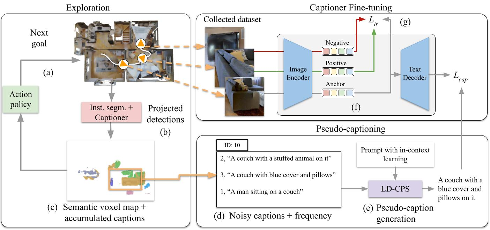
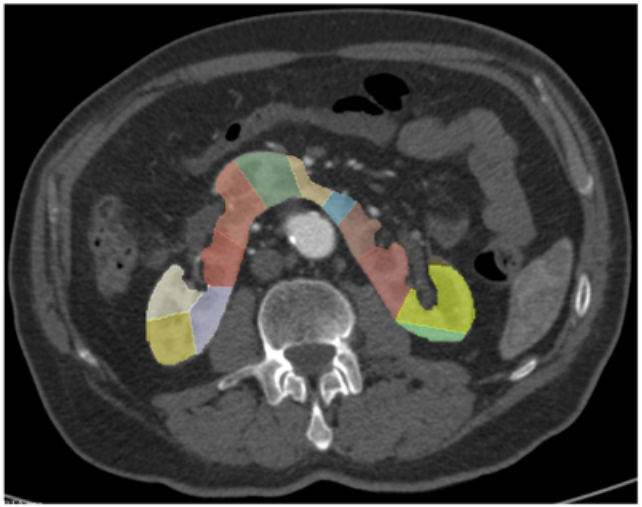

|

|
Embodied Image Captioning: Self-supervised Learning Agents for Spatially Coherent Image Descriptions
Tommaso Galliena,
Tommaso Apicella,
Stefano Rosa,
Pietro Morerio,
Alessio Del Bue
Lorenzo Natale,
ICCV, 2025 (Highlight)
project page
/
arXiv
We propose a novel self-supervised learning framework for embodied image captioning, where an agent explores a 3D environment to generate spatially coherent image descriptions and collect challenging training data to fine-tune vision-language models.
|
|

|
Semiautomatic volume measure of kidney vascular territories on CT angiography to plan aortic aneurysm repair in patients with horseshoe kidney
Axel Bartoli,
Alberto Colombo,
Franscesco Pisu,
Tommaso Galliena,
Chiara Gnasso,
Enrico Rinaldi,
Germano Melisano,
Anna Palmisano,
Antonio Esposito
Journal of European Radiology, 2024
Paper
By developing a semiautomatic CTA-based model to measure kidney vascular territories, we enable precise preoperative planning for aortic aneurysm repair in patients with horseshoe kidney, reducing risk of postoperative renal damage
|
Feel free to steal this website's source code. Do not scrape the HTML from this page itself, as it includes analytics tags that you do not want on your own website — use the github code instead. Also, consider using Leonid Keselman's Jekyll fork of this page.
|
|
{kind=link}